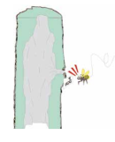

Biologia
Os meliponíneos e as abelhas melíferas (Apis mellifera) constituem o grupo das abelhas eussociais avançadas, que se caracterizam por formarem ninhos perenes, com uma única fêmea fértil e ativa (a rainha), numerosas operárias que cuidam do ninho e machos reprodutivos (Michener, 1974)
- Ninhos - localização
- Materiais de construção
- Arquiteturas
- Indivíduos da colônia
- Divisão de trabalho
- Reprodução
Ninhos
Os meliponíneos possuem ampla diversidade de locais de nidificação, mas a maioria das espécies depende de árvores vivas para construção dos ninhos Um estudo realizado nos Campos de Cima da Serra no Rio Grande do Sul registrou 144 ninhos de meliponíneos de quatro diferentes espécies. O maior percentual de ninhos localizava-se em cavidades pré-existentes nos troncos de árvores e os ninhos da guaraipo (Melipona bicolor schencki) foram encontrados predominantemente em troncos de canela com grandes diâmetros (Lopes, 2012).
A canela vermelha (Ocotea pulchella), por exemplo, uma das espécies de árvore utilizada pela guaraipopara a construção de seus ninhos, leva em torno de 65 anos para atingir 30 cm de DAP (diâmetro na alturado peito) (Spathelf, et al., 2000), o que mostra a importância da manutenção das florestas para asobrevivência dos meliponíneos. Além disso, os meliponíneos utilizam as árvores tanto para construção dosninhos como para coleta de recursos alimentares, o que os torna muito suscetíveis à fragmentação dasflorestas.
Em algumas espécies os ninhos são subterrâneos, localizados em buracos no solo, geralmente em ninhosabandonados de formigas ou de cupins ou entre espaços de raízes de planmortas (Camargo, 1974; Camargo &Wittmann, 1989; Lopes, 2012). Algumas espécies de mirins podem construir seus ninhos em cavidadesdecorrentes de aantrópica (em muros, pontes, habitações humanas, paredões, moirões de cerca) ou geofísica(fendas de rochas) (Camargo, 1974; Camargo & Wittmann, 19Roubik, 2006; Witter et al., 2007). Existemainda espécies como a irapuá que independem destes locaiconstroem ninhos expostos ou aéreos abrigadospelas copas de árvores (Camargo, 1974; Michener, 1974) (Figura 4)
Materias de contrução
Os meliponíneos constroem seus ninhos com materiais que podem ser obtidos na natureza como as resinas vegetais (própolis), o barro, fibras vegetais, sementes etc. Outros materiais utilizados na construção são produzidos ou processados no interior da colônia como a cera, cerume, batume e o geopropólis.
Arquiteturas
As arquiteturas dos ninhos dos meliponíneos são consideradas as mais complexas entre as espécies deabelhas. Os ninhos são muito diversificados quanto à estrutura, entretanto, apresentam um padrão base(Figura 8), constituído principalmente pela área de cria e os potes para armazenar alimento (mel e pólen)e por estruturas auxiliares como a entrada e túnel de ingresso, invólucro e o batume (Nogueira- Neto,1997; Venturieri, 2008; Michener, 2013)
Individuos da colônia
Nos meliponíneos, assim como em outros insetos sociais, existem dois sexos (fêmeas e machos) e entre as fêmeas duas castas (rainha e operárias) (Figura18). As fêmeas são originadas a partir de ovos fecundados enquanto os machos de ovos não fecundados, produzidos por rainhas ou por operárias.
Divisão de trabalho
Assim como nas abelhas domésticas, nas colônias dos meliponíneos as atividades realizadas pelas operárias seguem uma determinada sequência relacionada com a idade, desenvolvimento fisiológico das mesmas e necessidades das colônias. Nas primeiras horas após o nascimento, as abelhas realizam a limpeza corporal, mas na maior parte do tempo permanecem imóveis sobre os favos de cria. Nos próximos dias as operárias produzem cera nas suas glândulas e manipulam cerume raspando as células de cria, constroem células de cria, participam no processo de postura e aprovisionam os alvéolos de cria (Figura 22 A). A partir do 14º dia são lixeiras internas e após o 25º dia são guardas, receptoras de néctar, desidratadoras de néctar, ventilam a colmeia e saem para o campo em busca de pólen, néctar, barro, resina e água (Figuras 22 D e E) (Kerr et al., 1996). As abelhas nutrizes por exemplo, são mais jovens, com glândulas hipofaringeanas bem desenvolvidas. As operárias dos meliponíneos apresentam uma considerável flexibilidade na alocação de tarefas. As atividades não são rigidamente estabelecidas, mas dependem das condições da colônia. Por exemplo, é possível forçar uma colônia formada apenas por operárias mais velhas reativar as glândulas hipofaringeanas e, assim, voltar às atividades de alimentação da cria. Certas tarefas como desidratação do néctar, guarda e campo são decididamente determinadas pela idade das operárias, enquanto que incubação do favo, trabalhos com cera, cuidado com a cria e limpeza da colmeia dependem exclusivamente das necessidades das colônias (Sakagami, 1982; Kerr et al., 1996)
Reprodução
O processo de produção de novos indivíduos nos meliponíneos apresenta uma sequência de comportamentosque se iniciam com a construção da célula onde será depositado o ovo, que ali permanece até a emergênciado adulto. A principal característica das abelhas sem ferrão é a alimentação maciça da cria. Após acélula de cria estar pronta, é preenchida com alimento líquido, e a rainha põe o ovo sobre ele (Figura23); a célula então é fechada imediatamente pelas operárias (Sakagami & Zucchi, 1974). O ovo eclodirá, alarva passará por um processo de desenvolvimento, ingerindo todo o alimento que a célula contém, atéchegar à fase de pré-pupa, pupa e depois de algum tempo, finalmente o adulto emergirá (Figura 23). Asoutras abelhas da colônia retirarão o cerume que envolve a célula, fase em que os favos de cria ficam comuma coloração mais clara (Figura 24 A; Quadro 3). O desenvolvimento de ovo ao adulto varia de 36 a 45dias e a longevidade média da uma operária é de 50 a 52 dias, mas pode variar de acordo com a espécie ecom a época do ano. Uma rainha fisogástrica pode viver de 1 a 2 anos (Kerr et al., 1996; Nogueira-Neto,1997; Venturieri, 2008)